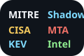
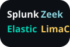
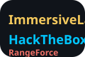
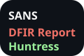

About me
I'm a Bachelor of Technology student in Computer Science at SBSSU, obsessed with safeguarding systems and people. I spend most of my time inside student SOC labs, community CTFs, and cloud sandboxes where I can break things safely and document what actually works.
My focus areas span detection engineering, purple teaming, and automation that shortens the time between a finding and a fix. Whether I'm hardening a lab, writing a Lambda function to normalize logs, or walking classmates through threat modeling, I care about clarity, repeatability, and measurable improvements to security posture.
Next role focus
Detection Engineering or SOC Intern
Blending purple-team drills with automation projects so I can contribute to blue teams on day one.
-
30+
Hands-on labs documented
From ransomware rehearsals to IaC guardrails.
-
12
Playbooks & detections
Sigma rules, automation bots, and tabletop guides.
-
3
Student SOC teams led
Coordinated rotations, comms drills, and after-action notes.
Focus areas in my studies
-

Detection engineering labs
Practicing Sigma rules and telemetry maps to understand how detections evolve from noisy logs.
-

Cloud guardrail projects
Mapping AWS guardrails, IaC baselines, and IAM least-privilege patterns for campus builds.
-

Incident response drills
Documenting tabletop-ready guides for phishing, ransomware, and insider drills to learn IR flow.
-

Community learning sessions
Sharing CTF walkthroughs and lessons learned with community cyber clubs as a fellow student.
Foundational practice stack
Weekly reps that keep my fundamentals sharp across networking, OSINT, Linux, encrypted comms, and wireless security.
-
Networking refresh cycles
Packet Tracer and GNS3 rebuilds of VLANs, ACLs, and site-to-site VPN tunnels until configs feel automatic.
-
OSINT field notes
Hunt compromised credentials and attack chatter with Maltego, SpiderFoot, and public breach corpora—fully documented in Obsidian.
-
Kali / toolchain scrims
Rotate through Nmap, Burp Community, and custom Python scripts against local vulnerable VMs to keep muscle memory intact.
-
Surface vs. dark web intel
Use Tor, OnionBalance mirrors, and RSS collectors to monitor ransomware notes and leak sites—only for defensive intelligence.
-
Wi-Fi & radio security
Run aircrack-ng, hcxdumptool, and Kismet captures inside a Faraday bag to test WPA3 settings and rogue AP alerts.
-
Log triage sprints
Ship Zeek and Suricata data into Elastic/Splunk sandboxes, tag anomalies, and convert useful pivots into Sigma drafts.
Certifications & Virtual Experiences
Security Stack & Intel Sources
Daily mix of detection tooling, training sandboxes, and intel feeds I lean on for investigations.
Stack rotates quarterly—below is the current high-usage mix.
-

Threat intel feeds
MITRE ATT&CK, CISA KEV, Shadowserver, and Malware Traffic Analysis to track active TTPs.
Intel & Research -

Detection toolchain
Splunk, Elastic SIEM, Zeek, and LimaCharlie pipelines for building repeatable detections.
Blue Team Stack -

Hands-on training
Hack The Box, RangeForce, and Immersive Labs cyber ranges keep my offensive and defensive skills sharp.
Labs & CTFs -

Community briefings
SANS NewsBites, The DFIR Report, and Huntress Tuesday Defense for practitioner-focused lessons.
Community Signals